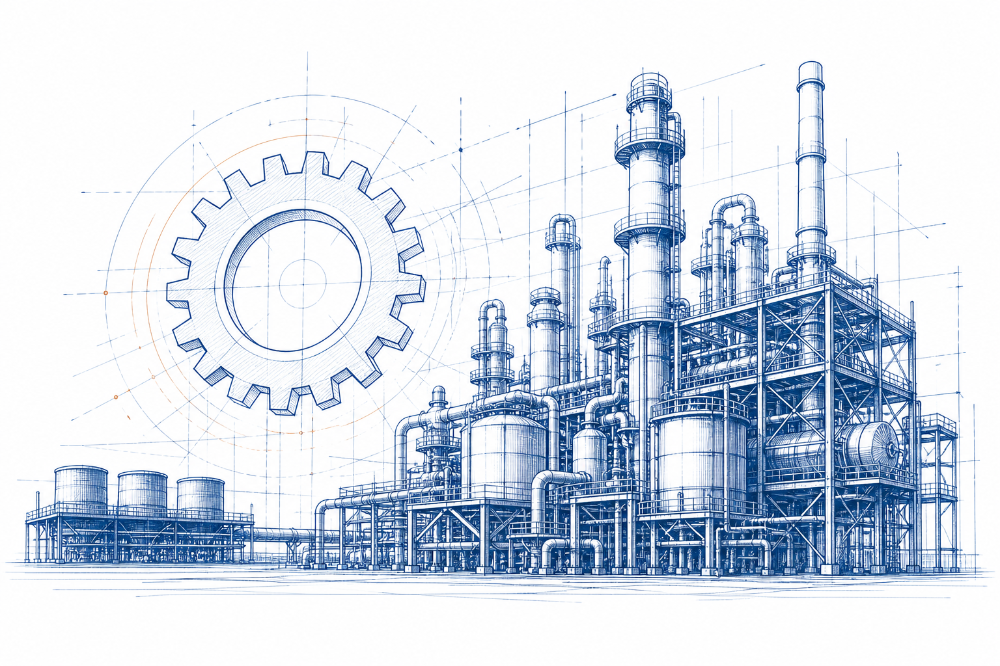
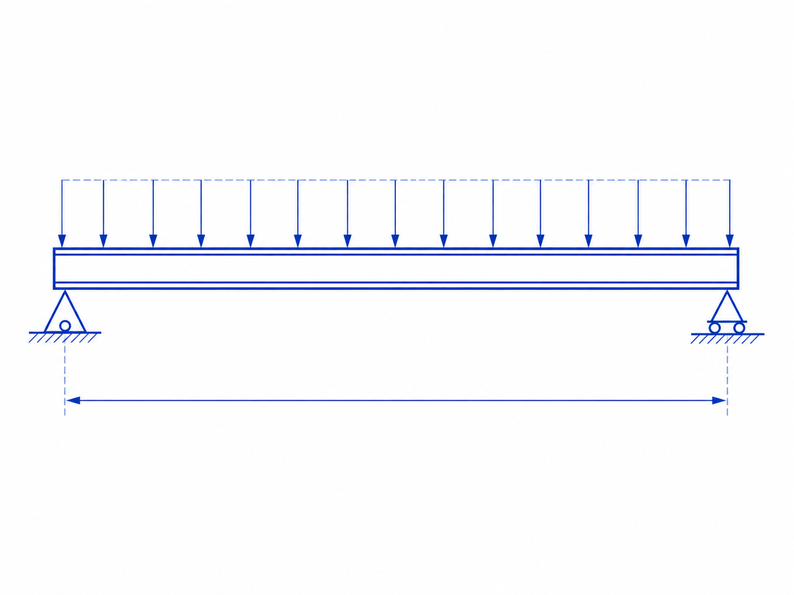
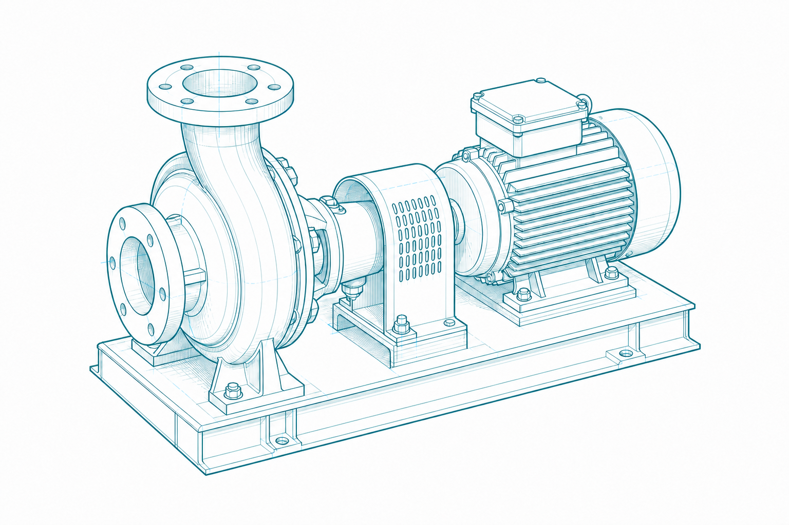
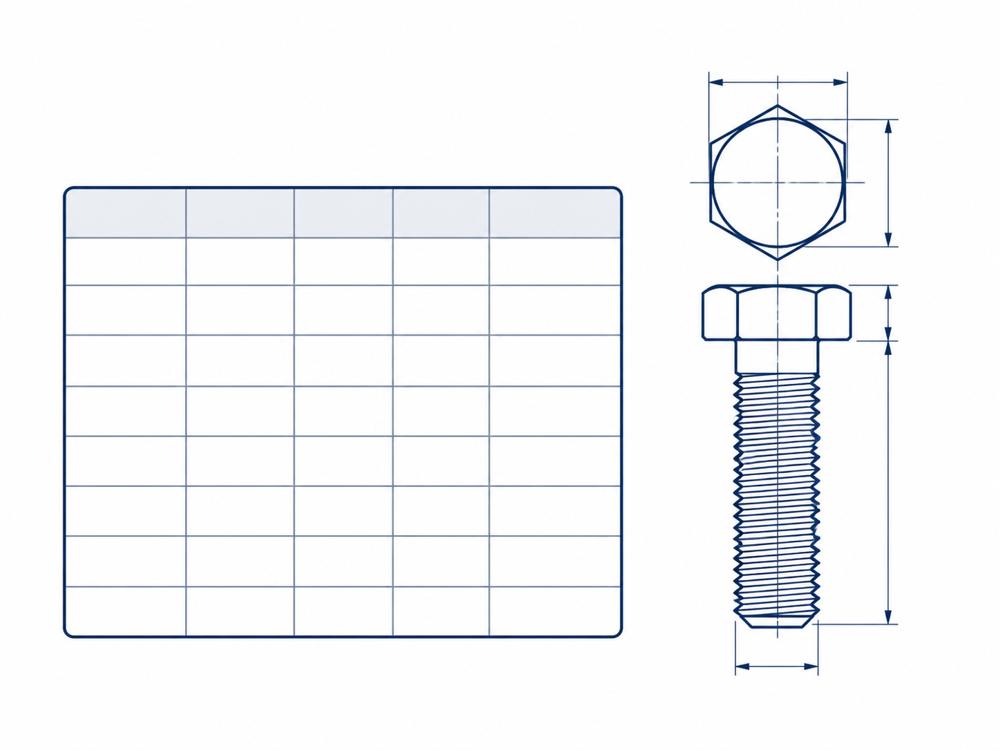
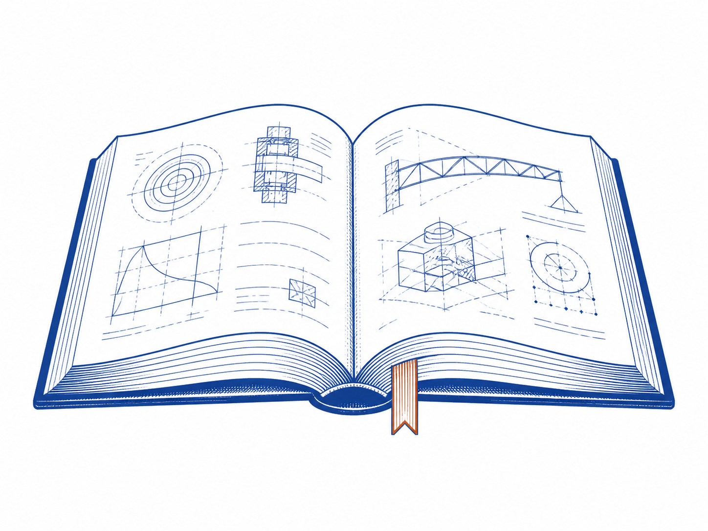

Engineering knowledge for industry.
Trusted formulas, data and step-by-step insights for engineering professionals and students.

Explore by Domain
Start with the approved primary domains. Individual knowledge pages will be added under the frozen hierarchy.
Engineering
Engineering fundamentals, mechanics, materials, fluid flow, thermal systems and more.

Explore knowledge →Industrial Equipment
Pumps, compressors, heat exchangers, boilers, valves and equipment design.

Explore knowledge →Industrial Processes
Process calculations, mass and energy balances, P&ID and process design.
 Explore knowledge →
Explore knowledge →
Engineering Reference Data
Physical properties, standards, materials, fasteners, pipes and dimensional data.

Explore reference data →Calculators & Converters
Every active existing calculator and each unit converter is listed below with its direct page link.
Engineering Calculators
11 active toolsExisting calculation tools for preliminary engineering work.
Unit Converters
6 convertersConvert common SI, metric and imperial engineering units.
Latest Articles
In-depth articles and guides from the engineering knowledge base.
Engineering Knowledge Library
Explore all published engineering articles. Each page uses the current reading, search and navigation format.

Fundamental Book Reference
New knowledge pages use fundamental books as their primary source base. Source details will be shown on each technical page.
Read our content approach →